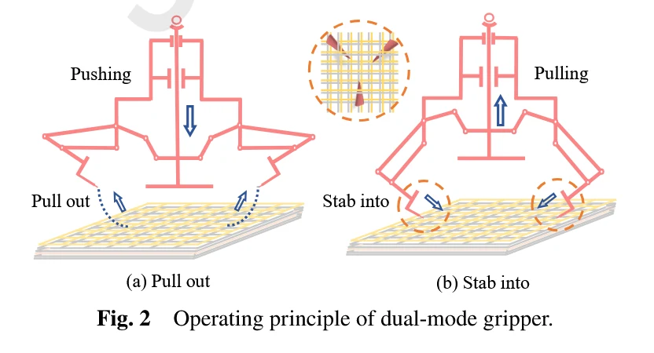

本文目录 · 7 节
一句话精要：SPACE-1 面向刚性金属板与柔性 MLI 隔热层两类机械性质不同的表面：干黏附承担前者，爪刺穿刺/锚定承担后者。关键是轨迹、材料约束与双模式步态的共同设计。
{kind=link}

放大查看 ↗· 论文事实、项目启发与待验证事项分开记录。
机制 / 结构如何把动作变成附着
直线驱动器先带动滑块，再由偏置曲柄滑块和闭环连杆把位移转为爪尖插入、锚定与退出轨迹。运动学公式的作用是确保轨迹满足接触深度、方向和退出约束；读公式时先判断其约束目标，再看复数向量或关节角的表达。
MLI 柔软、起皱且可能被穿刺，与 Asbeck 的粗糙硬壁并不是同一问题。干黏附在柔性材料上的接触不稳定，不代表该材料“粗糙度大”；刚度、层间结构和是否允许损伤都影响机制选择。
项目启发 / 哪些值得迁移
“双模夹爪”“干黏附加爪刺”已有先例。当前构想需验证双稳态几何能否让两个接触机制分别工作，减少互相干涉，并量化切换成本和受载保持能力。连杆锁止也可能降低保持功耗，不能仅用“零保持功耗”判断创新性。
证据 / 参数与测试条件
| 项目 | 原文或精读记录 | 条件与解释 |
|---|---|---|
| 刚性表面模式 | PU/SiO₂ 干黏附 | 重点是接触、预载与可重复脱附 |
| 柔性表面模式 | 爪刺穿刺 / 机械锚定 MLI | 需考虑穿透深度和退出损伤 |
| 爪尖控制 | 直线驱动器 + 闭环连杆 | 运动学用于限定可执行轨迹 |
| 验证层级 | 材料复用、力响应、轨迹和整机运动 | 数值与具体载荷条件未在此补填 |
实验 / 转化为可检查的问题
以下为结合阅读提出的实验建议，尚不代表本项目已完成：
- 把材料循环测试、单足力—位移测试和整机运动分开记录；测试前说明是否允许穿刺或留下损伤。
- 对候选双模足端记录两种状态的暴露部件、接合路径和误接触情形，检查非工作机制是否干涉。
边界 / 这些结论不能直接外推
面向微重力场景的设计和演示不能直接证明正常重力下的竖直承重能力。双稳态薄板是否更轻、更省能需要同任务实测，不能预先称为最优方案。
关联阅读 / 沿问题继续读
- Hu2021 — 已将干黏附、微刺与 SMA 放在同一夹爪，是材料组合的直接对照。
- Yu2024 — 区分“更换附着机制”与“同一黏附机制开/关”。
- Kim2023 — 同样区分硬面互锁和软面穿刺，但 Kim 更强调动态触壁。
论文关联地图 · 当前项目记录：光滑面方案仍在筛选，历史干黏附构想不等于已定型方案。
来源 / 阅读记录与原文
整理依据：paperreading：Fang2026_双模夹爪、Fang2026_五杆爪刺机构、MLI机械穿刺约束。